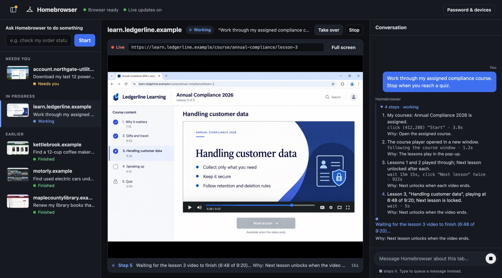
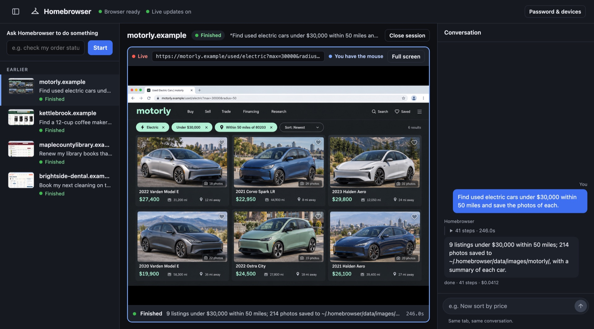
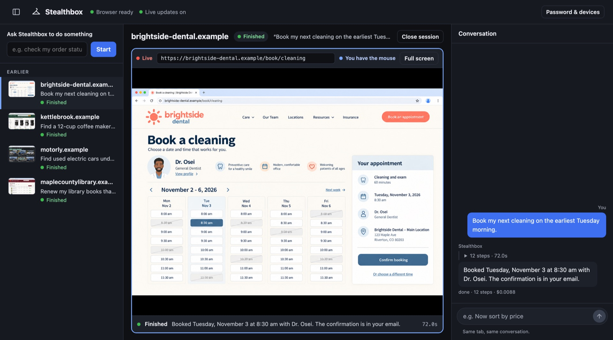
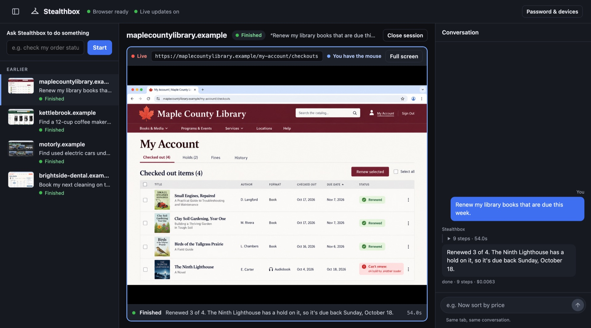
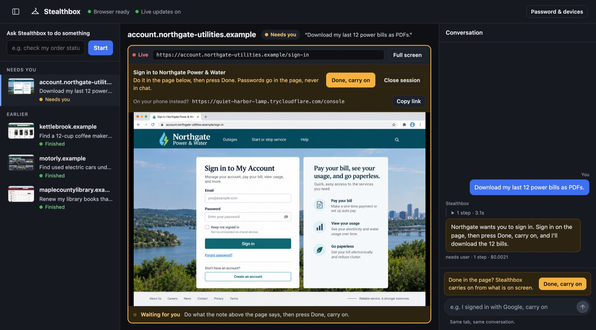

One sentence in, the answer out.
This is the Stealthbox console recording a real run on a city library's website. It types the request, enters the site from a search the way a person would, finds the branch page, and reads the hours. Sped up 2.5×, otherwise unedited.
- Opens the site from Bing, like a person, instead of jumping straight to a URL.
- Finds Locations in the library's menu, then the Central Library page.
- Reads the page for today's hours and the address.
Every step comes with the reason it took it, and you can open the model's reasoning in the console.
Errands that eat an evening.
Ask your agent to do things on websites "with Stealthbox". These show the real console with made-up sites in it.

Training
"Work through my assigned compliance course. Stop when you reach a quiz."
Follows the course player into its pop-up and waits out each video until Next unlocks. The quiz is yours.

Shopping around
"Find used electric cars under $30,000 within 50 miles and save the photos of each."
9 listings, 214 photos saved, with a summary of each car.

Appointments
"Book my next cleaning on the earliest Tuesday morning."
Booked Tuesday, November 3 at 8:30 am.

Errands
"Renew my library books that are due this week."
Renewed 3 of 4, and says why the fourth couldn't be.
A browser with a home of its own.
It lives in a box
A Docker container on your Mac, Linux or Windows computer. Its traffic leaves from your own connection, and its profile keeps your logins between runs.
It wears a face
Chromium with Fury's fingerprint patches. Each box keeps one consistent persona, so a site sees the same person every visit.
It drives itself
Your agent sends a goal in plain words. Stealthbox looks at the screen, picks each step with DeepSeek, and moves a real mouse and keyboard. Or drive it yourself over CDP.
You step in
When a site needs you, like a sign-in, it stops and sends you a private link. Sign in from your phone, tap Done, and it carries on.

Watch it, or take the wheel.
A private link behind a password you choose, from your phone or any computer.
- Every session and what it's doing right now, with the reason for each step.
- The live browser: type an address, or take over the mouse.
- Sign in yourself, then tap Done, carry on. Passwords never go in a chat.
- Message a session, or stop it.
One sentence to your agent.
Paste this into Claude Code, Codex, Cursor, Grok or any coding agent:
Install Stealthbox from https://github.com/jonclegg/stealthbox- It installs Stealthbox on your Mac, Linux or Windows computer.
- It asks before installing Docker, if your computer doesn't have it yet.
- It opens a page for your OpenRouter key. You paste the key there, on your own computer, never into the chat, and choose the console password.
- It proves it works on two or three sites you use, with a screenshot of each.
Good to know
What does it cost?
Stealthbox is free and MIT licensed. Its driver uses DeepSeek through your own OpenRouter key; the library run above cost under a cent.
Does anything leave my computer?
The browser runs in a container on your machine and browses from your connection. Nothing is reachable from outside unless you share the console, which asks for your password.
Can I run more than one?
Each box is one browser with one persona and its own saved logins. Run another box for another identity.
Which agents work with it?
Any agent that can run a command: it sends goals with stealthbox chat, or drives the browser itself over CDP.